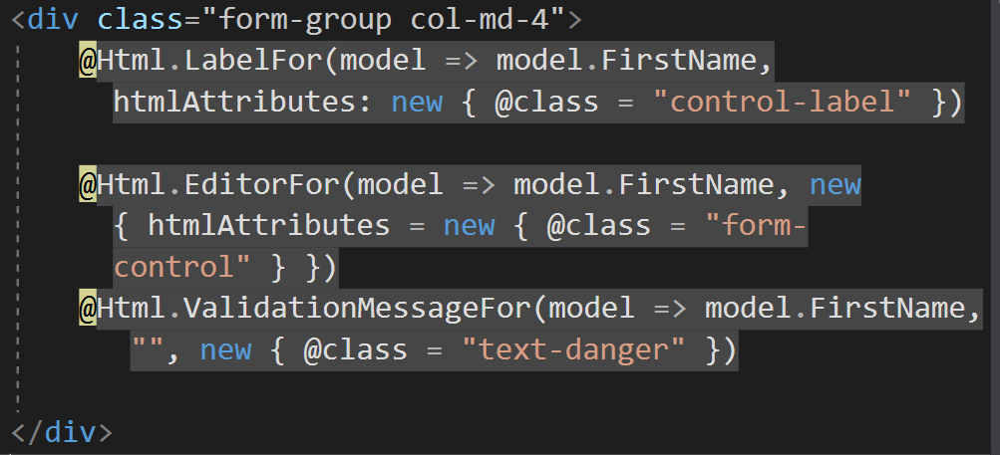

Assignment Summary:
The main objective is to write an MVC web application that uses a one table local database. The web application will have a page to make request to the landlord though a form online and a page to view all requests in the database. Here is a link to the full assignment details: http://www.wou.edu/~morses/classes/cs46x/assignments/HW5_1819.html.
Step 1 (Setup):
The first think I did was setup the home page. I pretty much just set up the links I will need and stylised it a bit to look good. I Decided to make a orange-reddish color as the basis for the website. Not much else happened here. The _Layout page is also had a few cosmetic changes that aren't really worth mentioning.
Step 2 (Database Setup):
So I I created the database by opening the SQL object explorer in visual studio. There I just rightclickled on the local database location and made a database called TennantInfo. I then made the up.sql and down.sql in the App_Data. The code were pretty simple and similar to the examples in class so I won't mention much else about them.
Step 3 (Code):
TennantRequest.cs:
This file was the model to represent a request. It was saved in the model folder. Not much difficulty in this part. The most notable part here where the data annotations that the variables had. One problem that I came across in this part was using the “phone” data annotation. At first I thought thought that this would be enough to validate the phone number variable but that wasn’t the case. It pretty much only made sure the right characters were used. I then had to use regular expressions to format it more to US standards. This was especially important because I think It had no limit of on the length of characters before. Here is how snippet on the variables and data annotations were formatted:

TennantRequestContext.cs:
This file was the database context class that had the connection to the database and a collection of the TennentRequest model. Not much to write in this part.

I then had to set up the string connection to actually connect to the database I made. This was as simple as just going to the web.config file and pasting this code:

Note that the connection string was taken by going to the SQL object explorer, right clicking on the database, selecting properties, and copying the string connection from there.
HomeController.cs:
This part had the way to setup the views. A key part here was how a context was passed to the view. A clear example is shown in the “Display” action method.

Another important part was the the section involved in the Create action method, specifically the POST one. It contained some checks for the variable it was passed. It also had a redirect call when things went as planned. Here is the example:

Create.cshtml:
The notable part here was how I used lambda functions to set up the form elements with razor html. Here is an example of one of the form elements created this way.
Display.cshtml:
The important part here was how the items in the TennantRequests list were looped though and displayed involving a lambda functions. Here are a few examples:
Step 4 (Results):
Test result video (Note that It has no sound):